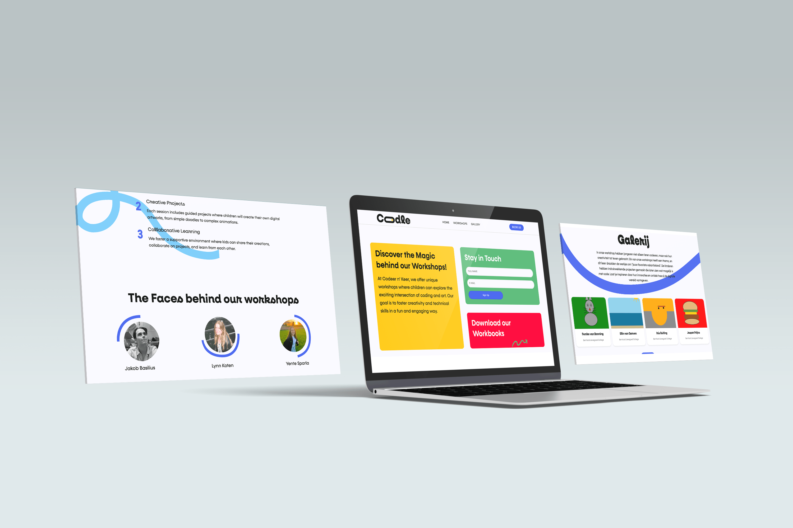
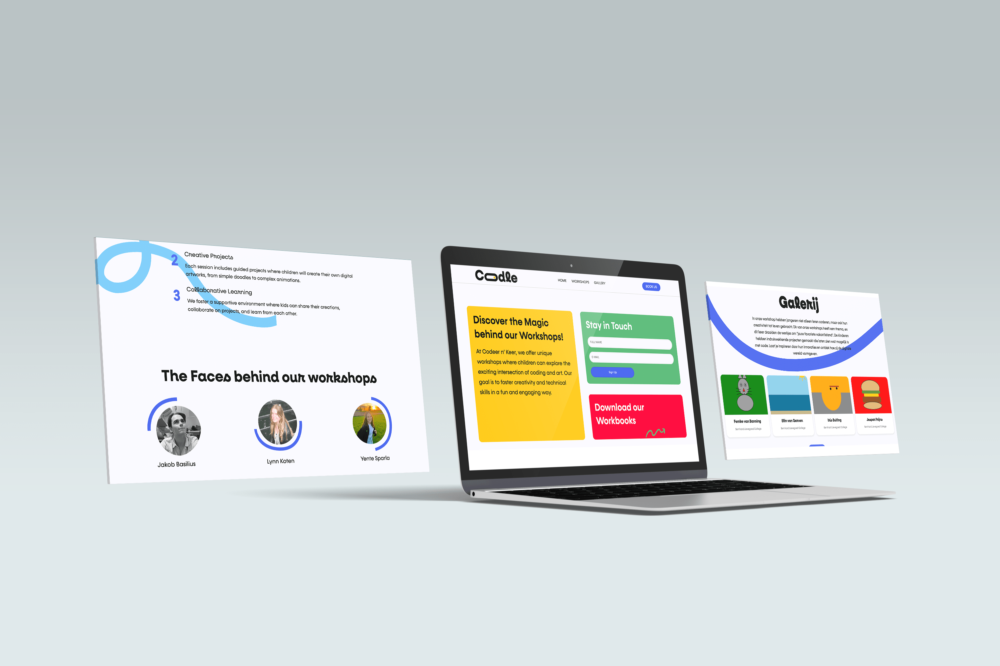
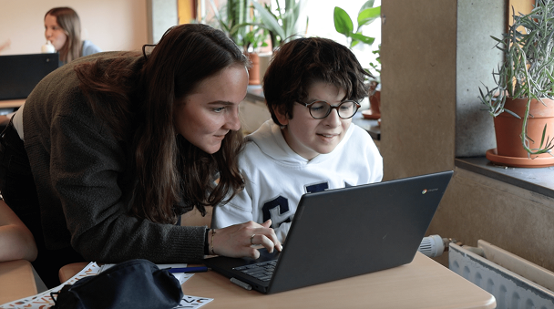
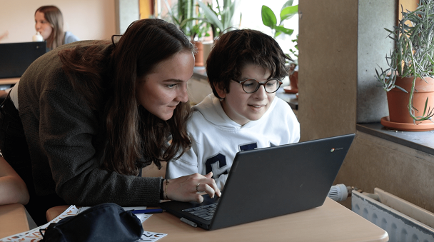

Blurb
Samen met Bas en Tim heb ik gewerkt aan Blurb, een innovatieve lees-app die jongeren (12-18 jaar) op een TikTok-achtige manier inspireert om meer te lezen. Dit groepsproject was onderdeel van een campagne voor Cubiss, gericht op het (her)ontdekken van leesplezier. Mijn rol lag vooral bij de ontwikkeling van de huisstijl en visuele communicatie. Met interactieve functies en beloningen maakt Blurb lezen leuk en relevant voor jongeren.
Schoolproject - Cubiss
2024

Coodle
In Blok 1.4 onderzoeken we de rol van coderen in de moderne wereld, met focus op het nut ervan en de link tussen kunst en technologie. Deze kennis passen we toe in de interactieve workshop Kunst met Code, waarin leerlingen kennismaken met coderen via de visuele programmeertaal P5. Ze leren hun creatieve ideeën omzetten in digitale kunstwerken en ontwikkelen tegelijkertijd hun logisch denkvermogen en computational thinking.
Coodle is een innovatief platform dat kinderen inspireert om te coderen. Met P5 kunnen ze op een speelse manier digitale kunst maken en hun projecten delen in een interactieve community. Ons doel is om coderen toegankelijk en leuk te maken, zodat kinderen essentiële digitale vaardigheden opdoen voor de toekomst.
Meer info: Coodle Workshops
Schoolproject
2024
 

 
